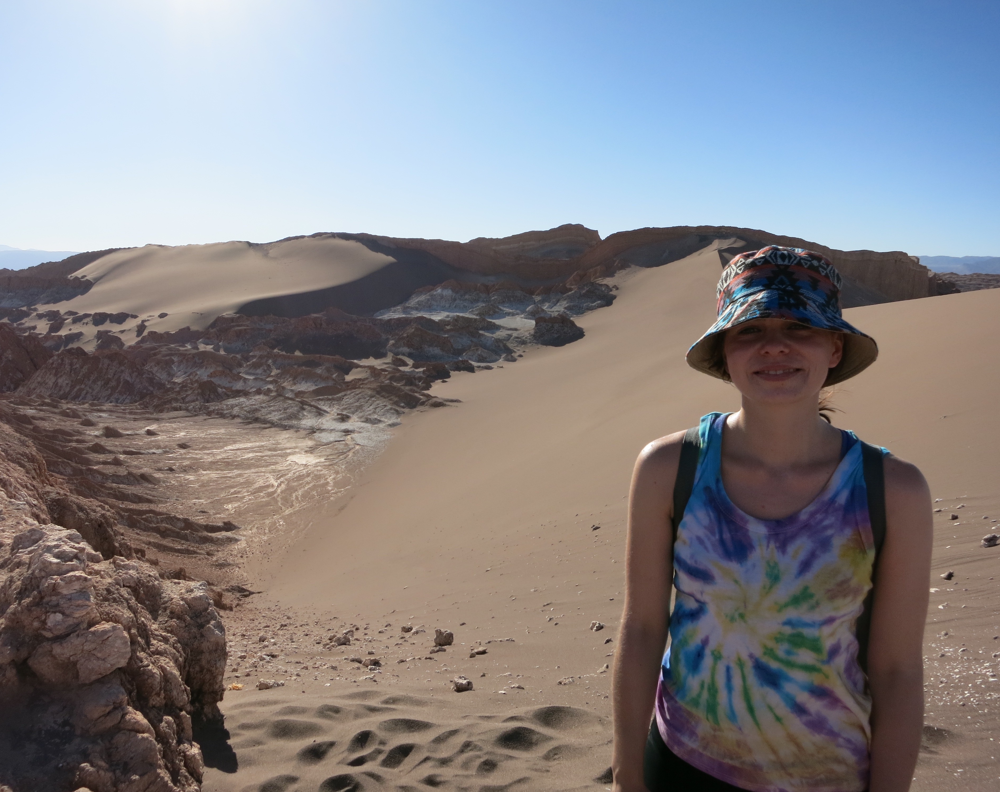

Anne Pein

Atacama Desert, Chile, 2016.
I am a PhD student in Mathematics at the Technical University of Munich.
anne.pein [at] t-online [dot] de
You can find my full CV here: CV
Research Interests:
- PDEs, Dynamical Systems
- Stochastic
- Functional/Harmonic Analysis
- Numerical Analysis
Publications:
- F. Voigtlaender and A. Pein, “Analysis vs. synthesis sparsity for 𝝰-shearlets,” preprint on arXiv (2017).
- A. Pein, S. Loock, G. Plonka, and T. Salditt, “Using Sparsity Information for Iterative Phase Retrieval in X-Ray Propagation Imaging,” Opt. Express 24, 8332-8343 (2016).
Other Interests:
- Traveling, Photography
- Hiking, Swimming
- Literature, Music, Languages, Card & Board Games
- Nature, Conservation, Animal Rights